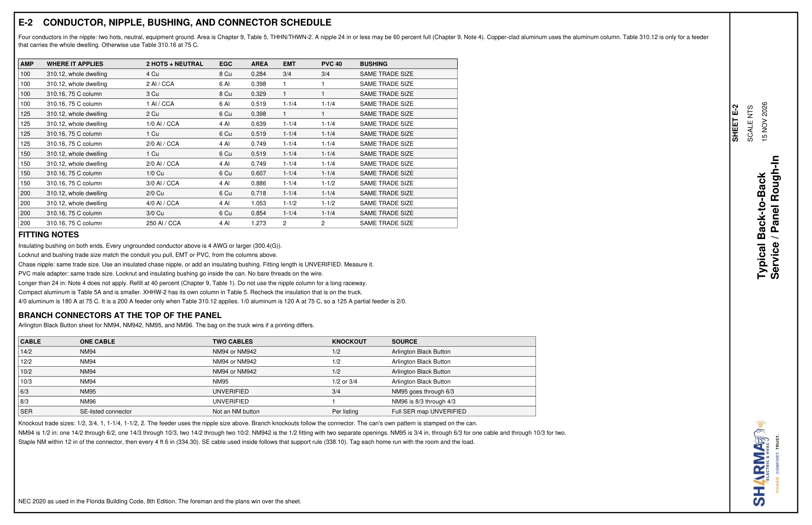

Back-to-Back Subpanel Rough-In
Sharma's standard is back-to-back. The Siemens MM0202B1200 meter-main goes on the exterior face of the wall. The Siemens indoor 200A, 30-space panel goes directly behind it, in that same stud bay. A short nipple — PVC or EMT, with locknuts and bushings — carries the 4-wire feeder straight through the wall. Two hots, a neutral, an equipment ground. The feeder does not travel the attic. Central Florida house, NEC 2020 as used in the Florida Building Code, 8th Edition. At rough-in the conductors are left long and coiled. Nothing is terminated.
The picture — wall section
Meter outside, panel directly behind, nipple through the wall
- Hot A — black
- Hot B — red
- Neutral — white
- EGC — green or bare
- Branch cables — leave the top
Read the section left to right. The meter-main is on the outside face. The indoor panel is in the same bay, directly behind it. Four conductors pass straight through the nipple and stop, coiled, in the can. The only cables that go up are branch circuits, out the top of the indoor panel.
Engineering drawing version
Engineering sheets E-1, E-2, E-3
Printable set, 11×17 landscape, three sheets. E-1 is the wall section, both front elevations, the clearance, the one-line, and the grounding detail. E-2 is the conductor, nipple, bushing, and connector schedule. E-3 is framing the bay and the rough-in list.
Download E-1 · E-2 · E-3 (PDF)Sheet E-1 — wall section through the nipple.

Sheet E-2 — feeder sizes, nipple trade size, bushings, and branch connectors.

Sheet E-3 — framing the panel bay and the rough-in list.

Inside the indoor panel
The meter-main breaker is the service disconnect, so the indoor panel is on the load side of that disconnect. On the load side, the grounded conductor is not used to ground the can, and it is not tied to the equipment ground again.
Take the bonding screw or strap out before the cover goes on. Do not leave it in the bottom of the can for someone to thread back in. The neutral bar stays on its insulators. The ground bar is mounted metal-to-metal to the enclosure. At trim, neutrals land only on the isolated bar. Equipment grounds, including the feeder equipment ground, land only on the ground bar.
The nipple
The two cans share one straight nipple. PVC or EMT both work when the fittings are listed for the spot. Line the knockouts up before you cut. A crooked nipple means one of the cans is not actually behind the other.
- Keep it 24 inches or less. A nipple that short does not pick up the ampacity adjustment that applies when several current-carrying conductors share a longer raceway.
- Close the opening. The raceway fitting is what closes the knockout. Locknut tight, no open hole left beside it (312.5).
- Bushing on 4 AWG and larger. This feeder is well over 4 AWG. Where those conductors enter the cabinet, protect them with a fitting that has a smooth insulated throat (300.4(G)). Bushing on the meter-main end and bushing on the panel end.
- Fittings that survive the weather. The outdoor end sees rain. Use raceway and fittings suited to that face of the wall (300.6).
- Seal the temperature change. One end of the nipple is outdoors and the other is indoors. Seal the raceway so warm indoor air does not travel through it and condense (300.7(A)). Duct seal, or another sealant approved for the raceway, packed in the nipple.
Feeder size
The indoor panel is the 200A, 30-space panel for the house, and the meter-main breaker is what protects the feeder. When that feeder carries the whole dwelling, Table 310.12 sets the size: 4/0 aluminum or 2/0 copper for the two hots and the neutral.
The equipment ground is sized from the breaker, not from Table 310.12. A 200A breaker needs an equipment ground at least #6 copper or #4 aluminum (250.122). Four conductors in the nipple: black, red, white, green or bare. The white stays the neutral. If the two hots are the same color, phase-tape one leg red at each end.
| Conductor | 200A whole-dwelling feeder |
|---|---|
| Hot A, hot B, neutral | 4/0 Al or 2/0 Cu — Table 310.12 |
| Equipment ground | #6 Cu or #4 Al minimum — 250.122 |
| Raceway | Short PVC or EMT nipple, bushing each end |
Grounding stays at the meter-main
The grounding electrode conductor, the main bonding jumper, and the neutral-to-ground bond all land in the meter-main. That is the service. The indoor panel is fed from the load side and does not get a second bond or a ground rod of its own. The equipment ground in the nipple is the path back to the service.
- Every electrode present is bonded in (250.50). Rods, a concrete-encased electrode, a metal water pipe — whatever the job actually has — tie into the one grounding electrode system. Electrode types are in 250.52.
- Rods: 8 ft, driven so the full length is in the earth. Space them at least 6 ft apart. Sharma uses two rods (250.53). The drawing shows that pair under the meter-main.
- Bonding bridge: the intersystem bonding connection goes at the service, on this grounding system, so cable and phone have a place to land (250.94).
- GEC size: to rod electrodes, the code never requires larger than #6 copper (250.66(A)). Sharma's usual grounding conductor is #4 copper. It lands in the meter-main, not in the indoor panel.
Height, clearance, and where it cannot go
- Meter centerline is the utility's number. Duke Energy: center of the meter at least 4 ft and not more than 5 ft 6 in above final grade. FPL: not less than 5 ft and not more than 6 ft above finished grade. OUC's booklet requires 3 ft clear in front of the meter and beside it; take the centerline from the current OUC book and the planner.
- Breaker handle. On both cans, the center of the grip of the highest breaker handle, in its highest position, stays at or under 6 ft 7 in above the floor or grade (240.24(A)). 404.8(A) uses that same measurement for switches.
- Working clearance on both faces. In front of the meter-main and in front of the indoor panel: 30 in wide or the width of the can, whichever is more, 36 in deep for this 120/240-volt equipment with live parts on one side, and 6 ft 6 in high (110.26). The door opens at least 90°. The floor in that box stays clear.
- Not a bathroom, and not a clothes closet (240.24(D) and (E)). That rules the indoor panel. The meter-main is outside, on the garage wall, where the utility and the plan put it.
Rough-in steps
1 · Pick the bay
One wall. The meter-main on the exterior face, the indoor panel in the stud bay directly behind it. Not a bathroom, not a clothes closet. If the two knockouts will not line up in a straight line, you are not back-to-back yet.
2 · Set the meter-main
Height from the utility — Duke, OUC, or FPL, as above — then plumb and solid into the structure. The 200A breaker handle still has to end up at or under 6 ft 7 in. A can that leans makes the nipple miss.
3 · Set the indoor panel
Plumb in that same bay, directly behind the meter-main. Set the height so the highest breaker handle lands at or under 6 ft 7 in, and so the back knockout lines up with the meter-main knockout.
4 · Cut and fit the nipple
Straight, short, 24 inches or less. Locknut and insulating bushing on each end. Unused openings closed. Seal the raceway for the outdoor-to-indoor temperature change.
5 · Pull the feeder and leave it long
Four conductors, sized from the table above, straight through the nipple. Coil about 18 to 24 inches in the meter-main and the same in the indoor panel. Do not skin them onto the lugs. Identify black, red, white, and the equipment ground.
6 · Bonding check
Indoor bonding screw or strap out. Neutral bar isolated. Ground bar installed and bonded to the can. The service bond, the grounding electrode conductor, the rods, and the bonding bridge are at the meter-main.
7 · Branch circuits leave the top
Homeruns go up out of the top of the indoor panel and into the attic. The garage block is not bored for those cables. The feeder is not one of those cables — it already went through the nipple. Where a branch cable passes through a stud closer than 1-1/4 in to the face, cover it with a steel plate (300.4).
Bushing, nipple, and connector schedule
The nipple is 24 inches or less, so Chapter 9, Note 4, allows it to be filled to 60 percent. The areas below are Chapter 9, Table 5, for THHN/THWN-2: three conductors (two hots and the neutral) plus the equipment ground. Copper-clad aluminum uses the aluminum column. Table 310.12 applies only when this feeder carries the whole dwelling. Otherwise use the 75°C column of Table 310.16. A 4/0 aluminum conductor is 180 amps at 75°C, so it is not a 200-amp feeder unless 310.12 applies.
The locknut and the insulating bushing are the same trade size as the raceway you actually pull. Every ungrounded conductor in this table is 4 AWG or larger, so 300.4(G) requires the insulating bushing on both ends. A chase nipple is the same trade size and has to be an insulated chase nipple, or a chase nipple plus a bushing. Published chase-nipple length is UNVERIFIED — measure the fitting. A PVC male adapter is the same trade size, with the locknut and the bushing inside the can.
| A | Rule | 2 hots + neutral | EGC min | EMT | PVC Sch 40 |
|---|---|---|---|---|---|
| 100 | 310.12 whole dwelling | 4 Cu | 8 Cu | 3/4 | 3/4 |
| 100 | 310.12 whole dwelling | 2 Al or CCA | 6 Al | 1 | 1 |
| 100 | 310.16 at 75°C | 3 Cu | 8 Cu | 1 | 1 |
| 100 | 310.16 at 75°C | 1 Al or CCA | 6 Al | 1-1/4 | 1-1/4 |
| 125 | 310.12 whole dwelling | 2 Cu | 6 Cu | 1 | 1 |
| 125 | 310.12 whole dwelling | 1/0 Al or CCA | 4 Al | 1-1/4 | 1-1/4 |
| 125 | 310.16 at 75°C | 1 Cu | 6 Cu | 1-1/4 | 1-1/4 |
| 125 | 310.16 at 75°C | 2/0 Al or CCA | 4 Al | 1-1/4 | 1-1/4 |
| 150 | 310.12 whole dwelling | 1 Cu | 6 Cu | 1-1/4 | 1-1/4 |
| 150 | 310.12 whole dwelling | 2/0 Al or CCA | 4 Al | 1-1/4 | 1-1/4 |
| 150 | 310.16 at 75°C | 1/0 Cu | 6 Cu | 1-1/4 | 1-1/4 |
| 150 | 310.16 at 75°C | 3/0 Al or CCA | 4 Al | 1-1/4 | 1-1/2 |
| 200 | 310.12 whole dwelling | 2/0 Cu | 6 Cu | 1-1/4 | 1-1/4 |
| 200 | 310.12 whole dwelling | 4/0 Al or CCA | 4 Al | 1-1/2 | 1-1/2 |
| 200 | 310.16 at 75°C | 3/0 Cu | 6 Cu | 1-1/4 | 1-1/4 |
| 200 | 310.16 at 75°C | 250 Al or CCA | 4 Al | 2 | 2 |
Nipple trade size is the smallest EMT or Schedule 40 PVC whose 60 percent area holds the four THHN/THWN-2 conductors. If the raceway is longer than 24 inches, refill at 40 percent. Compact aluminum (Table 5A) and XHHW-2 have their own areas — recheck before you buy the pipe. The Sharma house feeder is the 200-amp whole-dwelling row: 4/0 aluminum or 2/0 copper, in a 1-1/2 inch nipple for the aluminum and a 1-1/4 inch nipple for the copper.
Branch connectors at the top of the panel
Arlington Black Button sheet for NM94, NM942, NM95, and NM96. The bag on the truck wins if a printing differs. Service-entrance cable needs an SE-listed connector, not an NM button. An Arlington 842 excerpt lists some SE cable (8/2 through 4/2). A catalog number for every SER size is UNVERIFIED.
| Cable | One cable | Two cables | KO |
|---|---|---|---|
| 14/2, 12/2, 10/2 | NM94 | NM94 or NM942 | 1/2 |
| 10/3 | NM94 | NM95 | 1/2 or 3/4 |
| 6/3 | NM95 | UNVERIFIED | 3/4 |
| 8/3 | NM96 | UNVERIFIED | 1 |
| SER | SE-listed connector | — | Per the listing |
Knockout trade sizes on this work: 1/2, 3/4, 1, 1-1/4, 1-1/2, and 2. The feeder uses the nipple size in the table. Branch knockouts follow the connector. Staple the cable within 12 inches of the connector, then every 4 feet 6 inches (334.30, and 338.10 when SE cable is used inside). Tag each home run with the room and the load before you leave, so the directory (408.4) can be written at trim.
Framing the panel bay
The cited can is the Siemens ES main-lug box SB3040L1200G: 30 inches high, 14.5 inches wide, 4.25 inches deep, from the Siemens ES unassembled load-center sheet. A main-breaker 30-space box on that same sheet is 36 inches high. This panel is main-lug, because the meter-main breaker is the disconnect. If the can on the truck is a later catalog, measure it and frame to that can.
- King studs set to the can you are holding. A 14.5-inch can does not squeeze into a tight 16-inch bay. Frame the opening to the can.
- Flat 2×4 header and sill above and below the can, and a flat block in the bay above so the home runs have a staple within 12 inches of the connector (334.30).
- Flush. On a wood wall, the front edge of the cabinet is flush with the drywall or proud of it, not buried (312.3). On a noncombustible finish, not set back more than 1/4 inch. The 1/4-inch setback people know from device boxes is 314.20. For this cabinet the rule is 312.3. Drywall on the job is 1/2 inch or 5/8 inch, whichever the wall is.
- Plywood backer only when a surface-mounted can has nothing solid to screw to. The thickness is whatever the screws need. It is not a code thickness.
- Top plate. Drill or notch for the home runs. If the edge of the hole is within 1-1/4 inch of the face, put on a steel plate (300.4). Firestop that hole only when the ceiling is a fire-rated assembly (300.21).
- Dedicated space (110.26(E)): the width and depth of the panel, from the floor to 6 feet above the panel, stays free of plumbing, ducts, and anything that is not part of the electrical install. The working clearance in front — 30 inches by 36 inches by 6 feet 6 inches — stays free on both sides of the wall, and a door swing does not cover it.
Quick numbers
| Item | Back-to-back standard |
|---|---|
| Meter-main | Siemens MM0202B1200 on the exterior face. 200A main is the service disconnect |
| Indoor panel | Siemens 200A, 30-space, directly behind it in the same bay |
| Feeder | 4-wire in a short nipple. 4/0 Al or 2/0 Cu — Table 310.12 |
| Equipment ground | #6 Cu or #4 Al minimum — 250.122 |
| Nipple | PVC or EMT, 24 in or less, locknut and bushing each end — 312.5, 300.4(G), 300.6 |
| Seal | Raceway sealed exterior to interior — 300.7(A) |
| Indoor neutral | Isolated. Bonding screw or strap removed — 250.24(A)(5), 250.142(B) |
| Indoor ground bar | Separate bar, bonded to the can |
| Electrodes | At the meter-main. Two 8-ft rods, 6 ft apart, plus every other electrode present — 250.50, 250.52, 250.53 |
| Bonding bridge | At the meter-main — 250.94 |
| Meter height | Duke: 4 ft to 5 ft 6 in. FPL: 5 ft to 6 ft. OUC: current book and the planner |
| Handle | Highest handle ≤ 6 ft 7 in — 240.24(A) |
| Clearance | Both sides: 30 in × 36 in × 6 ft 6 in — 110.26 |
| Branches | Out the top of the indoor panel, into the attic. Block is not bored |
| In the cans | 18–24 in coiled each end. Not terminated |
Back-to-back checklist
Tap each item as you finish it. The checkmarks stay on this phone.
0 of 9 doneCommon misses
- Feeder run up into the attic. The feeder is the nipple. Branch circuits are what leave the top.
- Panel offset down the wall so the nipple has to turn. Move the can until the knockouts line up.
- Bonding screw left in the indoor panel. The neutral is then bonded on the load side of the service disconnect.
- Neutrals and grounds on one bar in the indoor panel.
- No bushing on a feeder this size. 4 AWG and larger gets an insulated bushing at the enclosure.
- Open nipple from the garage heat into the outdoor air. Seal it.
- Grounding electrode conductor landed in the indoor panel. It lands in the meter-main.
- Branch cables bored through the garage block. They come out the top.
- Clearance used as a shelf on either face of the wall.
Content pending final review by Sharma's master electrician. Follow your foreman and the plans — they win over any page.